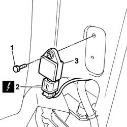

5580C40 sidebag sensor (one), lh or rh - r r
- Path
- Procedures > 55 ELECTRICAL EQUIPMENT > 5580 SPECIAL ACCESSORIES > 5580C air bag system > 5580C40 sidebag sensor (one), lh or rh - r r
- Kind
- repair procedure (removal / refitting; the operation number is the code)
- Applies to
- all engines; all production periods
- Interactive page
- https://sloeber94.github.io/elrnDB-fPnd/en/#/2753012
Applies to: all engines; all production periods
Applies to: all engines; all production periods
 Removing
Removing
 Refitting
Refitting7040H36 central trim lower element - r r
1. Undo the retaining bolt.
Remove the side bag sensor.
2. Disconnect the electrical connection.
 | Name | Connector |
|---|---|---|
2 | Sensor for driver's Side Bag | K66 |
| Name | Connector |
|---|---|---|
2 | Sensor for passenger Side Bag | K67 |
3. Remove the Side Bag sensor.

Applies to: all engines; all production periods
Refitting
RemovingFollow these precautions:
Connect the electrical connection.
| Name | Connector |
|---|---|---|
- | Sensor for driver's Side Bag | K66 |
| Name | Connector |
|---|---|---|
- | Sensor for passenger Side Bag | K67 |
Fit the side bag sensor in its seating and tighten the fixing bolt.
7040H36 central trim lower element - r r
Connect the battery terminals.
Check the operation of the Air Bag system using the Examiner or other diagnostic equipment.